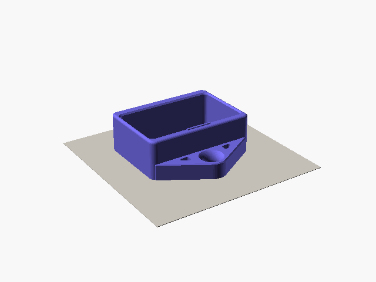
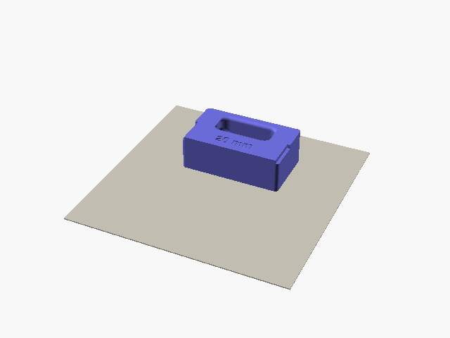
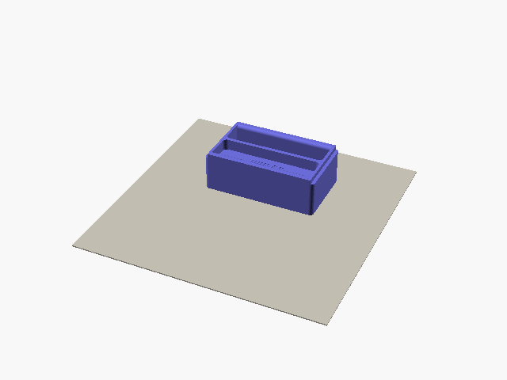
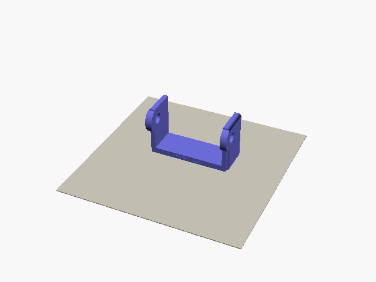
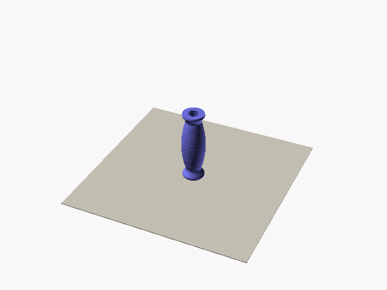
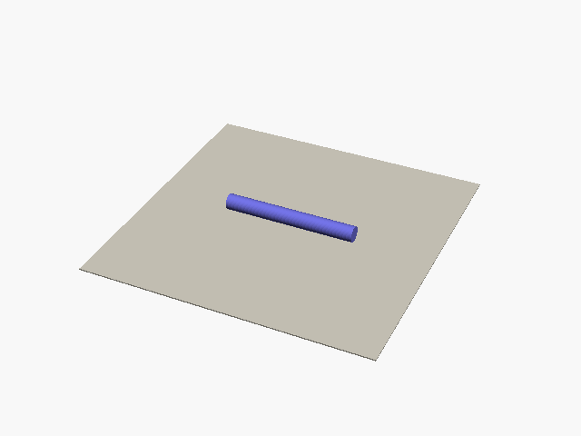

Printing gripswap
Nobody has load-tested these parts yet. Read the safety note in the README before you print.
Settings
Print every part in PETG. PLA turns brittle in the cold and bends in the heat.
| Part | Walls | Infill |
|---|---|---|
| Housing, inserts, roller frame | 3 | 15% gyroid |
| Roller | 3 | 20% |
| Printed axle | 4 | 100% |
Use a 0.4 mm nozzle and 0.2 mm layers. These parts carry your whole pull, so do not print them weaker.
For a stronger anchor plate, give it 100% infill with a modifier. This doubles the housing print time. Nobody knows yet if the plate needs it.
Which way up
The files from the configurator already lie the right way up, so slice them as they are. No part needs supports.






If you render a part in OpenSCAD yourself, add -D for_print=true:
openscad -D 'part="housing"' -D for_print=true -o housing.stl gripswap.scadGrip texture
You can give the grip a texture. The rest of the insert stays smooth. Each texture comes in three strengths: Fine is gentlest, and Coarse bites more but wears your skin faster. The notes below come from one print of the texture test.
Your slicer makes these three, with its fuzzy skin:
- Rock: rough cells, like sandstone. The favorite so far. Start here, at Medium. Bambu Studio and Orca only.
- Resin: a fine grit, like a resin hangboard. The one to pick in PrusaSlicer.
- Marble: rough veins. Bambu Studio and Orca only.
These three are part of the model, so any slicer prints them:
- Dots: small cones. The best of these three.
- Lines: ridges across the pull.
- Knurl: small pyramids. The most bite, and the hardest on skin.
| Model texture | Fine | Medium | Coarse |
|---|---|---|---|
| Dots | 0.4 mm high, 1.5 mm apart | 0.6 mm, 2 mm | 0.8 mm, 2.7 mm |
| Lines, Knurl | 0.4 mm high, 1 mm apart | 0.6 mm, 1.5 mm | 0.8 mm, 2 mm |
Pockets and steep slopers cannot have Dots, Lines or Knurl.
Rock, Resin or Marble in Bambu Studio or Orca Slicer
Open the -bambu-orca.3mf file, not the insert STL. The texture, walls and infill are already set. The file opens for a Bambu Lab X1 Carbon with Bambu PETG Basic, so pick your own printer and filament, then slice.
Resin in PrusaSlicer
- Load the insert STL and the
-fuzzy-modifier.stlfile together, as one object with two parts. They already line up. - Right-click the modifier part and change its type to modifier.
- Give the modifier fuzzy skin, set to "All walls". "Outside walls" misses the grip.
- Set the thickness and point distance from this table:
| Strength | Thickness | Point distance |
|---|---|---|
| Fine | 0.2 mm | 0.3 mm |
| Medium | 0.3 mm | 0.5 mm |
| Coarse | 0.4 mm | 0.8 mm |
How much filament
These are Bambu Studio 2.8 estimates for an X1 Carbon with Bambu PETG Basic and the settings above. Nobody has weighed a printed kit yet.
| Part | Filament | Time |
|---|---|---|
| Housing | 63 g | 1 h 33 min |
| Edge insert, 20 mm | 60 g | 1 h 31 min |
| Pocket insert, three-finger | 61 g | 1 h 38 min |
| Two-sided insert, 20 and 10 mm | 59 g | 1 h 30 min |
| Roller frame | 30 g | 1 h 19 min |
| Roller, unlevel | 20 g | 1 h 31 min |
| Roller, straight | 24 g | 1 h 32 min |
| Printed axle | 14 g | 22 min |
A housing and one edge insert take about 120 g and three hours. A 1 kg spool makes a housing and about 15 inserts.
Test prints
Find both under Test prints, in the Download section of the configurator.
Fit test
Print this first on a new printer. It is a thin slice of the housing front (the ring) and of an insert front (the frame). Push the frame into the back of the ring until it stops on the lips. It must slide in without force. If it sticks, see Checking the fit.
Texture test
This shows every texture before you choose one. You get two plates. texture-test.stl has Dots, Lines and Knurl. texture-test-bambu-orca.3mf has Rock, Resin and Marble, for Bambu Studio or Orca Slicer. Each plate takes about 50 minutes and 17 g.
The front tab is smooth, to compare. Each row behind it is one texture, with Fine, Medium and Coarse from left to right, labeled F, M and C. Press a finger pad on each tab and drag it down, the way you pull on a grip. Pick the one that holds best without hurting.
Checking the fit
- Slide the insert into the housing from the back. It stops on the lips at the front, and clicks over the stop at the back.
- To take it out, press the stop down and push the insert out the back.
- If it sticks, look at the face that was on the bed. A flared first layer ("elephant's foot") is the usual cause. Sand that edge, or turn on elephant-foot compensation in your slicer.
Before your first session
- Look for split layers at the anchor plate, the lips, the stop and the grip. Do not use a cracked part.
- Hang the block from the carabiner and load it slowly by hand before you pull hard.